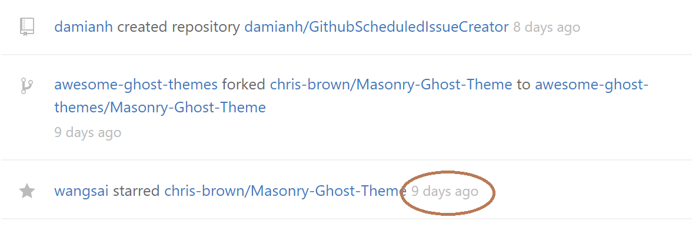

Web components were first introduced, I believe in 2011 by Alex Russel. The idea was clear and remains so today; create reusable UI widgets that can be shared across web applications.
This is the 2nd time i've looked at web components as a technical solution to a problem, the first was in 2012 and the reason for not adopting it then was the lack of support for it and better alternative approaches.
5 years on and its slow progress. Google has shown great support, so much so that they built the https://patents.google.com/ site using it and Chrome is currently the only browser that has full native support.
Another example is the relative time caption on everyone's favorite site, Github.

This is used throughout the site and is used to localise the given date depending upon the users browser settings. Notably, if the user has javascript disabled it will also fall back to the value set in the relative-time custom element.
<relative-time datetime="2017-02-05T06:26:26Z" title="Feb 5, 2017, 6:26 AM GMT">9 days ago</relative-time>
Clarification and avoiding confusion
Web components are often confused as a custom element, however as noted in the w3c standards specification, this is actually just one of four technologies used in the makeup of a web component. Collectively they include;
<my-navigation>hello world</my-navigation>
<template id="navigation">
...
<li>home</li>
...
</template>
this.createShadowRoot();
<link rel="import" href="navigation.html?v=1" async />
Now put it all together and you have a native, reusable UI component.
Shadow DOM
The shaddow DOM allows for encapsulation of a component. As the following example demonstrates, all styles defined inline below will be applied to the given markup and will not effect global scope.
var root = this.createShadowRoot();
root.innerHtml = '<style> * { color: red; } </style> <p>Hello</p>';
Browser support
Disclaimer: Today however it is worth noting the web component technical draft is incomplete and has been known to change so follow the draft with caution.
The features above are used to create a web component, however each have there own level of browser support and adoption. Therefore often web components are partially implemented or in most cases are just custom elements.
I wont spend too much time in detailing browser support as better resources can be found elsewhere and I would find it difficult to keep the content up to date.
There are various pollyfills available to plaster over the holes cautious browsers have left, but they come typically at a performance cost. However, depending on what your use cases are, there are libraries that exist to make the creation of web components easier. These are the most popular;
- Polymer provides a set of features for creating custom elements.
- SkateJS is a JavaScript library for writing web components with a small footprint.
- X-Tag is an open source JavaScript library that provides an interface for component development.
Polymer for example created a lighter weight shim for the shaddow dom called shady dom, more on that here.
And finally...
Web components certainly wont suit all projects and I'm not saying you should adopt blindly. If I were to create a green field SPA I would use a framework like React or Angular and take advantage of how they create re-usable components.
However the benefits of web components are that they utilise technologies that are native to the browser. This can be really compelling when working with mirosite's that each require consistant branding but have their own client side frameworks. In this case we're using native behavior and no reason to force additional dependencies upon them.
Im currently working on a Progressive Web application which will demonstrate real world usages of web components, so once done ill add the link to the post.
Thanks for reading. Please share any comments, experiences and links to related projects or posts.